Metode Pembuktian (Method of Proof)
Bagaimana cara membuktikan kebenaran suatu teorema matematika secara valid? Sesi ini membahas berbagai teknik pembuktian formal: Pembuktian Langsung (Direct Proof), Pembuktian Tidak Langsung (Indirect Proof) melalui Kontraposisi & Kontradiksi, Contoh Penyangkal (Counterexample), serta prinsip dasar dan contoh penerapan Induksi Matematika (Mathematical Induction).
1. Pembuktian Langsung (Direct Proof)
Pembuktian Langsung (Direct Proof) adalah metode pembuktian yang paling mendasar. Untuk membuktikan implikasi berbentuk \(P \implies Q\), kita mulai dengan mengasumsikan bahwa hipotesis \(P\) bernilai benar. Berdasarkan asumsi tersebut, kita menggunakan definisi matematis, aksioma, teorema yang sudah terbukti sebelumnya, dan aturan inferensi untuk menunjukkan secara logis bahwa konklusi \(Q\) juga bernilai benar.
- Asumsikan \(P\) benar.
- Gunakan definisi, sifat aritmatika, atau rumus yang relevan dengan variabel di \(P\).
- Lakukan manipulasi aljabar atau penalaran logis untuk menghasilkan bentuk \(Q\).
- Simpulkan bahwa \(Q\) benar.
- Bilangan bulat \(n\) disebut genap jika terdapat bilangan bulat \(k\) sedemikian rupa sehingga: \[n = 2k\]
- Bilangan bulat \(n\) disebut ganjil jika terdapat bilangan bulat \(k\) sedemikian rupa sehingga: \[n = 2k + 1\]
Buktikan secara langsung bahwa untuk setiap bilangan bulat \(n\), jika \(n\) adalah bilangan ganjil, maka kuadratnya \(n^2\) juga merupakan bilangan ganjil!
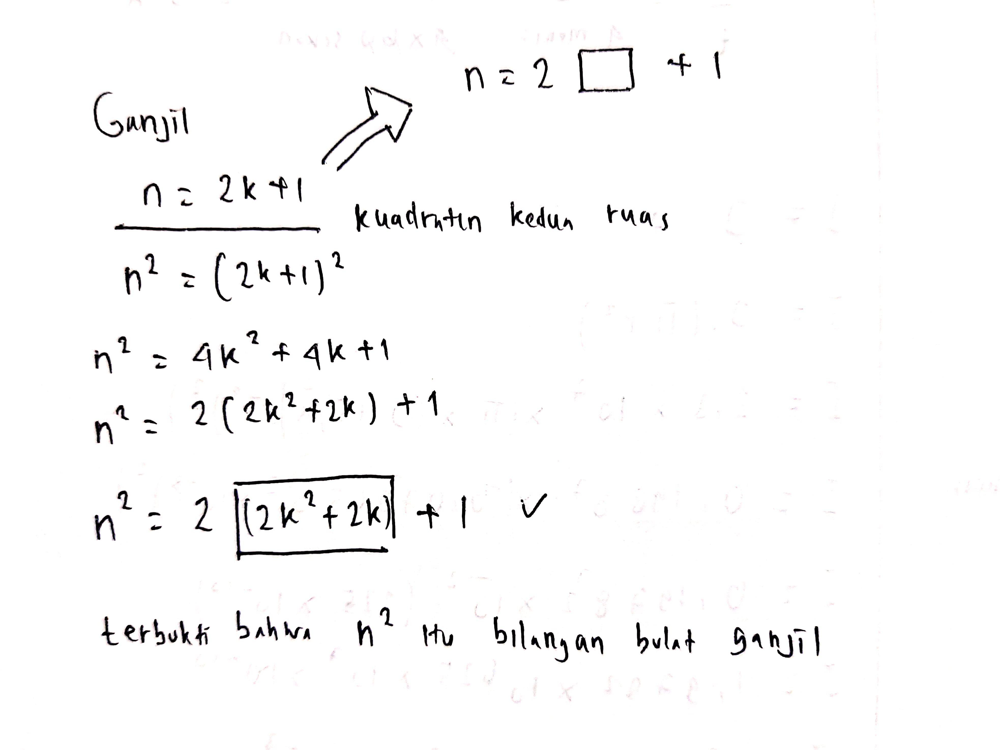
Pembuktian Langsung:
- Misalkan \(P\) adalah pernyataan "\(n\) ganjil" dan \(Q\) adalah "\(n^2\) ganjil". Kita asumsikan \(P\) benar.
- Karena \(n\) ganjil, maka berdasarkan Definisi 1, terdapat bilangan bulat \(k\) sedemikian rupa sehingga: \[n = 2k + 1\]
- Kita kuadratkan kedua sisi untuk mencari nilai \(n^2\): \[n^2 = (2k + 1)^2\] \[n^2 = 4k^2 + 4k + 1\]
- Faktorkan angka 2 dari dua suku pertama: \[n^2 = 2(2k^2 + 2k) + 1\]
- Misalkan \(m = 2k^2 + 2k\). Karena \(k\) adalah bilangan bulat, maka perkalian dan penjumlahan bilangan bulat (\(2k^2\) dan \(2k\)) juga akan menghasilkan bilangan bulat. Jadi, \(m\) adalah bilangan bulat (\(m \in \mathbb{Z}\)).
- Maka persamaan dapat ditulis menjadi: \[n^2 = 2m + 1\]
- Berdasarkan Definisi 1, ekspresi di atas merupakan bentuk bilangan ganjil.
Karena dari asumsi \(n\) ganjil kita berhasil membuktikan secara aljabar bahwa \(n^2\) ganjil, maka teorema terbukti benar. \(\blacksquare\)
Buktikan secara langsung bahwa jika \(m\) dan \(n\) keduanya adalah bilangan kuadrat sempurna (perfect square), maka hasil kalinya \(mn\) juga merupakan bilangan kuadrat sempurna!
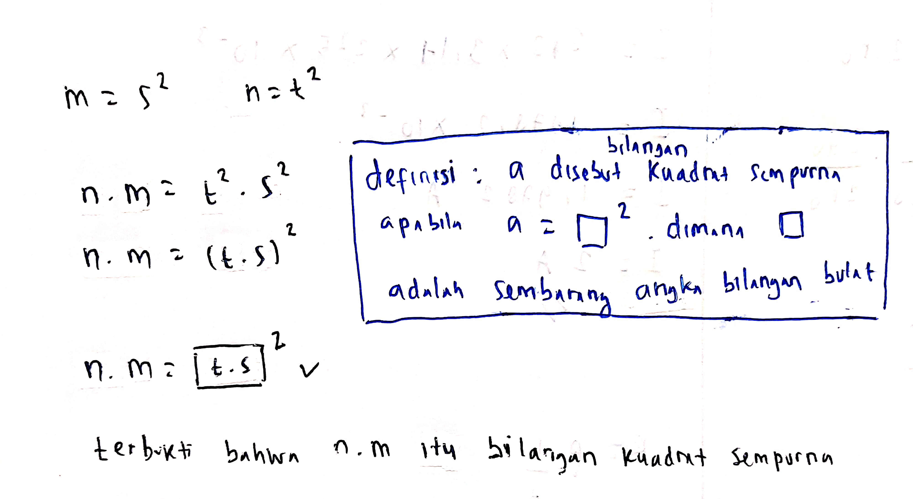
Definisi Kuadrat Sempurna: Suatu bilangan bulat \(x\) adalah kuadrat sempurna jika terdapat bilangan bulat \(y\) sedemikian rupa sehingga \(x = y^2\).
Pembuktian Langsung:
- Asumsikan hipotesis benar: \(m\) dan \(n\) adalah kuadrat sempurna.
- Berdasarkan definisi kuadrat sempurna, terdapat bilangan bulat \(s\) dan \(t\) sedemikian rupa sehingga: \[m = s^2 \quad \text{dan} \quad n = t^2\]
- Sekarang, mari kita tinjau hasil kali \(mn\): \[mn = s^2 \cdot t^2\]
- Menggunakan hukum eksponen (sifat asosiatif perpangkatan), kita dapat menggabungkan kuadrat tersebut: \[mn = (s \cdot t)^2\]
- Misalkan \(u = s \cdot t\). Karena \(s\) dan \(t\) keduanya adalah bilangan bulat, maka hasil kalinya (\(s \cdot t\)) juga harus merupakan bilangan bulat. Jadi, \(u \in \mathbb{Z}\).
- Kita substitusikan \(u\) ke persamaan: \[mn = u^2\]
- Karena \(mn\) dapat dinyatakan dalam bentuk \(u^2\) di mana \(u\) adalah bilangan bulat, maka berdasarkan definisi, \(mn\) adalah kuadrat sempurna.
Dengan demikian, terbukti secara langsung bahwa hasil kali dua kuadrat sempurna adalah kuadrat sempurna. \(\blacksquare\)
2a. Pembuktian dengan Kontraposisi (Proof by Contraposition)
Ketika kita mencoba membuktikan \(P \implies Q\) secara langsung, terkadang kita menemui jalan buntu karena hipotesis \(P\) tidak memberikan struktur aljabar yang cukup kuat untuk diarahkan ke \(Q\). Dalam situasi ini, kita dapat menggunakan Pembuktian Tidak Langsung (Indirect Proof).
Metode tidak langsung pertama adalah Kontraposisi (Contraposition). Metode ini memanfaatkan fakta logika bahwa implikasi \(P \implies Q\) secara ekuivalen logis sama dengan kontraposisinya, yaitu \(\neg Q \implies \neg P\).
Perhatikan bahwa kolom \(P \implies Q\) dan \(\neg Q \implies \neg P\) memiliki nilai kebenaran yang persis sama pada setiap baris:
| \(P\) | \(Q\) | \(\neg P\) | \(\neg Q\) | \(P \implies Q\) | \(\neg Q \implies \neg P\) |
|---|---|---|---|---|---|
| T | T | F | F | T | T |
| T | F | F | T | F | F |
| F | T | T | F | T | T |
| F | F | T | T | T | T |
Pernyataan: "Jika hari hujan, maka jalanan basah."
Kontraposisi: "Jika jalanan tidak basah, maka hari tidak hujan."
Kedua kalimat di atas memiliki arti logis yang sama. Jika kita bisa membuktikan kalimat kedua benar, otomatis kalimat pertama juga benar!
Buktikan bahwa untuk setiap bilangan bulat \(n\), jika \(3n + 2\) adalah bilangan ganjil, maka \(n\) adalah bilangan ganjil!
Jika kita menggunakan direct proof, kita mengasumsikan \(3n+2\) ganjil, yaitu \(3n+2 = 2k+1\). Maka \(3n = 2k-1 \implies n = \frac{2k-1}{3}\). Dari bentuk pecahan ini, sangat sulit untuk membuktikan secara formal bahwa \(n\) bernilai ganjil (\(2m+1\)) tanpa berurusan dengan pembagian pecahan yang rumit. Oleh karena itu, kontraposisi adalah pilihan terbaik!
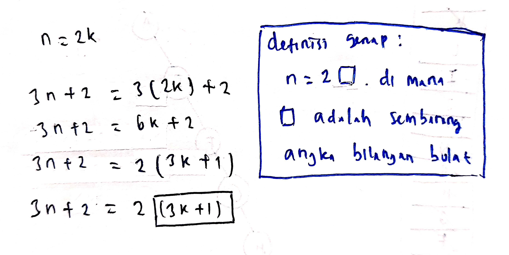
Pembuktian dengan Kontraposisi:
- Misalkan:
- \(P\): "\(3n+2\) adalah bilangan ganjil"
- \(Q\): "\(n\) adalah bilangan ganjil"
- Kontraposisinya adalah \(\neg Q \implies \neg P\):
- \(\neg Q\): "\(n\) adalah bilangan genap"
- \(\neg P\): "\(3n+2\) adalah bilangan genap"
- Asumsikan \(\neg Q\) benar, yaitu \(n\) adalah bilangan genap. Sesuai Definisi 1, terdapat bilangan bulat \(k\) sehingga: \[n = 2k\]
- Substitusikan nilai \(n = 2k\) ke dalam bentuk \(3n + 2\): \[3n + 2 = 3(2k) + 2\] \[3n + 2 = 6k + 2\]
- Faktorkan angka 2 pada persamaan tersebut: \[3n + 2 = 2(3k + 1)\]
- Misalkan \(m = 3k + 1\). Karena \(k\) bilangan bulat, maka \(m\) juga bilangan bulat. Kita peroleh: \[3n + 2 = 2m\]
- Karena \(3n+2\) dapat dinyatakan sebagai \(2m\) dengan \(m\) bilangan bulat, maka berdasarkan definisi, \(3n+2\) adalah bilangan genap (\(\neg P\) terbukti benar).
Karena kontraposisi \(\neg Q \implies \neg P\) bernilai benar, maka secara ekuivalen logis pernyataan asal \(P \implies Q\) juga bernilai benar. \(\blacksquare\)
Misalkan \(n\), \(a\), dan \(b\) adalah bilangan bulat positif. Buktikan bahwa jika \(n = ab\), maka \(a \le \sqrt{n}\) atau \(b \le \sqrt{n}\)!
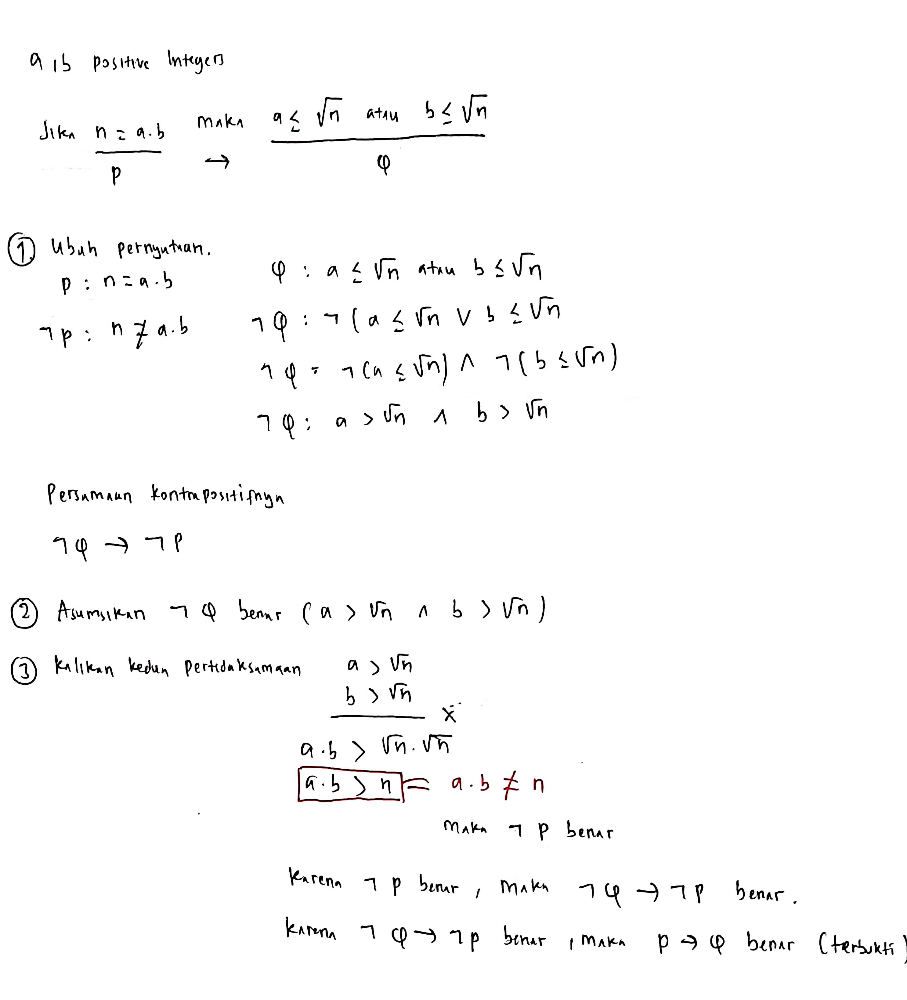
Pembuktian dengan Kontraposisi:
- Misalkan:
- \(P\): "\(n = ab\)"
- \(Q\): "\(a \le \sqrt{n}\)"
- \(R\): "\(b \le \sqrt{n}\)"
- Kontraposisinya adalah \(\neg(Q \lor R) \implies \neg P\).
Berdasarkan hukum De Morgan, negasi dari disjungsi adalah: \[\neg(Q \lor R) \equiv \neg Q \land \neg R\] Maka kontraposisinya berbunyi: "Jika \(a > \sqrt{n}\) dan \(b > \sqrt{n}\), maka \(ab \neq n\)." - Asumsikan hipotesis kontraposisi benar, yaitu: \[a > \sqrt{n} \quad \text{dan} \quad b > \sqrt{n}\]
- Karena \(a\), \(b\), dan \(\sqrt{n}\) semuanya bernilai positif, kita dapat mengalikan kedua pertidaksamaan tersebut secara langsung: \[a \cdot b > \sqrt{n} \cdot \sqrt{n}\] \[ab > n\]
- Karena \(ab > n\), maka secara logis \(ab \neq n\) (\(\neg P\) bernilai benar).
Karena kontraposisi terbukti benar, maka implikasi awal "jika \(n = ab\), maka \(a \le \sqrt{n}\) atau \(b \le \sqrt{n}\)" juga terbukti benar. \(\blacksquare\)
Mengingat kembali tabel kebenaran implikasi \(P \implies Q\), implikasi otomatis bernilai Benar (True) jika:
- Vacuous Proof (Bukti Kosong): Hipotesis \(P\) bernilai Salah (False).
- Trivial Proof (Bukti Trivial): Konklusi \(Q\) bernilai Benar (True).
Tunjukkan kebenaran proposisi \(P(0)\), di mana \(P(n)\) adalah pernyataan: "Jika \(n > 1\), maka \(n^2 > n\)" dengan domain bilangan bulat!
Pembuktian secara Vacuous:
- Proposisi \(P(0)\) dapat dinyatakan sebagai:
"Jika \(0 > 1\), maka \(0^2 > 0\)" - Tinjau hipotesis \(P\), yaitu "\(0 > 1\)". Ini adalah pernyataan yang bernilai Salah (False).
- Karena hipotesis bernilai Salah, maka implikasi \(P \implies Q\) secara otomatis bernilai Benar (True) berdasarkan aturan logika proposisional, tidak peduli apakah konklusi \(Q\) ("\(0^2 > 0\)") bernilai benar atau salah.
Jadi, \(P(0)\) terbukti benar secara vacuous. \(\blacksquare\)
Buktikan pernyataan berikut: "Jika \(n\) adalah bilangan kuadrat sempurna di antara 10 dan 15 (\(10 \le n \le 15\)), maka \(n\) adalah bilangan kubik sempurna!"
Pembuktian secara Vacuous:
- Domain bilangan bulat yang berada di antara 10 dan 15 adalah \(\{10, 11, 12, 13, 14, 15\}\).
- Mari kita uji apakah ada anggota himpunan tersebut yang merupakan kuadrat sempurna. Kuadrat sempurna terdekat adalah \(9 = 3^2\) dan \(16 = 4^2\). Tidak ada bilangan kuadrat sempurna di rentang tersebut.
- Karena tidak ada bilangan bulat yang memenuhi syarat hipotesis, maka hipotesis " \(n\) adalah kuadrat sempurna di antara 10 dan 15" selalu bernilai Salah (False).
- Dalam logika formal, implikasi dengan hipotesis bernilai Salah otomatis bernilai Benar (True).
Jadi, pernyataan tersebut terbukti benar secara vacuous. \(\blacksquare\)
Misalkan \(a\) dan \(b\) adalah bilangan riil positif. Buktikan proposisi \(P(0)\), di mana \(P(n)\) menyatakan: "Jika \(a > b\), maka \(a^n \ge b^n\)"!
Pembuktian secara Trivial:
- Proposisi \(P(0)\) berbunyi:
"Jika \(a > b\), maka \(a^0 \ge b^0\)" - Tinjau konklusi \(Q\), yaitu "\(a^0 \ge b^0\)". Karena \(a\) dan \(b\) adalah bilangan riil positif, maka \(a^0 = 1\) dan \(b^0 = 1\).
- Pernyataan konklusi menjadi: \[1 \ge 1\] yang bernilai Benar (True).
- Karena konklusi \(Q\) bernilai Benar, maka berdasarkan hukum implikasi, seluruh implikasi \(P \implies Q\) secara otomatis bernilai Benar (True), terlepas dari apakah hipotesis \(P\) ("\(a > b\)") benar atau salah.
Jadi, \(P(0)\) terbukti benar secara trivial. \(\blacksquare\)
2b. Pembuktian dengan Kontradiksi (Proof by Contradiction)
Metode tidak langsung kedua yang sangat kuat adalah Kontradiksi (Contradiction). Untuk membuktikan bahwa suatu pernyataan \(P\) adalah benar, kita mulai dengan mengasumsikan sebaliknya, yaitu pernyataan \(P\) salah (atau \(\neg P\) benar).
Dari asumsi \(\neg P\) tersebut, kita melakukan langkah logis sampai menemukan suatu hal yang tidak masuk akal atau bertentangan dengan hukum matematika yang sudah pasti benar, berbentuk \(r \land \neg r\) (disebut kontradiksi). Karena asumsi \(\neg P\) mengantarkan kita pada kontradiksi, maka asumsi tersebut pasti salah, sehingga pernyataan semula \(P\) haruslah benar.
Seorang ibu menasihati anaknya: "Jangan main hujan-hujanan, nanti kamu sakit!"
Si anak ingin menyangkal dan membuktikan ibunya salah. Dia berasumsi: "Saya main hujan-hujanan dan saya tidak akan sakit."
Dia pergi bermain hujan-hujanan. Keesokan harinya, dia bersin-bersin dan badannya demam (dia sakit). Ini merupakan kontradiksi dengan asumsinya semula. Berarti asumsi si anak salah, yang berarti nasihat ibunya benar!
Buktikan dengan metode kontradiksi bahwa jika \(3n + 2\) adalah bilangan bulat ganjil, maka \(n\) adalah bilangan bulat ganjil!
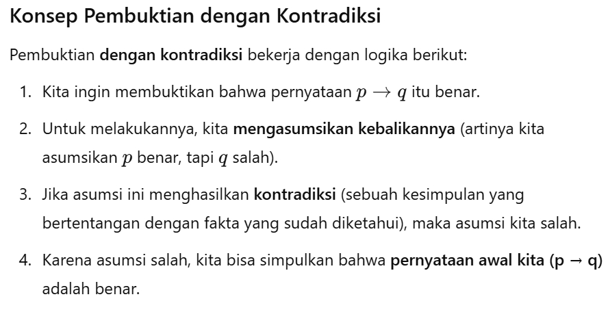
Pembuktian dengan Kontradiksi:
- Kita ingin membuktikan \(P \implies Q\).
Mari kita asumsikan implikasi ini salah. Negasi dari implikasi adalah: \[\neg(P \implies Q) \equiv P \land \neg Q\] Jadi, kita asumsikan:- \(3n+2\) adalah bilangan ganjil (hipotesis benar)
- \(n\) adalah bilangan genap (negasi konklusi benar)
- Karena \(n\) adalah bilangan genap, maka berdasarkan definisi, terdapat bilangan bulat \(k\) sehingga: \[n = 2k\]
- Substitusikan \(n = 2k\) ke dalam ekspresi \(3n+2\): \[3n + 2 = 3(2k) + 2 = 6k + 2\] \[3n + 2 = 2(3k + 1)\]
- Misalkan \(m = 3k + 1\). Karena \(k \in \mathbb{Z}\), maka \(m \in \mathbb{Z}\). Kita dapatkan: \[3n + 2 = 2m\] Ini berarti \(3n+2\) adalah bilangan genap.
- Di sini kita menemukan kontradiksi! Hasil pengerjaan menyatakan \(3n+2\) genap, padahal di langkah awal kita mengasumsikan \(3n+2\) ganjil. Suatu bilangan tidak bisa sekaligus bernilai genap dan ganjil (\(r \land \neg r\)).
- Karena asumsi kita menghasilkan kontradiksi, maka asumsi bahwa konklusi salah adalah keliru.
Jadi, haruslah \(n\) ganjil. Pernyataan terbukti benar. \(\blacksquare\)
- Bilangan riil \(r\) disebut rasional jika dapat dinyatakan dalam bentuk pecahan: \[r = \frac{p}{q}\] di mana \(p\) dan \(q\) adalah bilangan bulat dengan \(q \neq 0\), serta pembagi persekutuan terbesar \(\text{gcd}(p, q) = 1\) (yaitu pecahan berada dalam bentuk paling sederhana).
- Bilangan riil yang tidak dapat dinyatakan dalam bentuk tersebut dinamakan irasional.
Buktikan secara formal menggunakan metode kontradiksi bahwa \(\sqrt{2}\) merupakan bilangan irasional!

Pembuktian dengan Kontradiksi:
- Asumsikan negasi dari pernyataan tersebut benar, yaitu: "\(\sqrt{2}\) adalah bilangan rasional."
- Berdasarkan Definisi 2, kita dapat menuliskan \(\sqrt{2}\) sebagai: \[\sqrt{2} = \frac{p}{q}\] di mana \(p, q \in \mathbb{Z}\), \(q \neq 0\), dan \(\text{gcd}(p, q) = 1\) (pecahan paling sederhana).
- Kuadratkan kedua sisi persamaan: \[2 = \frac{p^2}{q^2}\] \[p^2 = 2q^2\]
- Karena \(p^2\) adalah kelipatan 2, maka \(p^2\) adalah bilangan genap. Berdasarkan teorema dasar bilangan bulat, jika kuadrat dari suatu bilangan bulat adalah genap, maka bilangan bulat itu sendiri juga genap. Jadi, \(p\) adalah bilangan genap.
- Karena \(p\) genap, berdasarkan definisi terdapat bilangan bulat \(k\) sehingga: \[p = 2k\]
- Substitusikan \(p = 2k\) kembali ke persamaan \(p^2 = 2q^2\): \[(2k)^2 = 2q^2\] \[4k^2 = 2q^2\] Bagi kedua sisi dengan 2: \[q^2 = 2k^2\]
- Karena \(q^2\) adalah kelipatan 2, maka \(q^2\) adalah bilangan genap, yang berimplikasi bahwa \(q\) juga merupakan bilangan genap.
- Dari poin 4 dan 7, kita menyimpulkan bahwa baik \(p\) maupun \(q\) adalah bilangan genap. Ini berarti keduanya memiliki faktor persekutuan minimal 2. Akibatnya: \[\text{gcd}(p, q) \ge 2\]
- Hal ini berkontradiksi langsung dengan asumsi awal kita di poin 2 bahwa \(\text{gcd}(p, q) = 1\) (pecahan sudah paling sederhana).
- Karena pengasumsian bahwa \(\sqrt{2}\) rasional menghasilkan kontradiksi, maka asumsi tersebut salah.
Jadi, terbukti secara hukum kontradiksi bahwa \(\sqrt{2}\) adalah bilangan irasional. \(\blacksquare\)
3. Contoh Penyangkal (Counterexample)
Ketika kita ingin membuktikan bahwa suatu pernyataan kuantifikasi universal bernilai salah, kita tidak perlu menunjukkan kesalahan untuk seluruh elemen. Kita cukup memberikan satu contoh kasus di mana pernyataan tersebut gagal/bernilai salah. Kasus penyangkal tunggal ini dinamakan Counterexample.
Secara formal, membuktikan bahwa pernyataan \(\forall x P(x)\) salah adalah setara dengan membuktikan bahwa negasinya bernilai benar: \[\neg \forall x P(x) \equiv \exists x \neg P(x)\]
Buktikan atau sangkal pernyataan berikut: "Setiap bilangan bulat positif dapat dituliskan sebagai hasil penjumlahan dari kuadrat dua bilangan bulat!"
Penyangkalan dengan Counterexample:
- Pernyataan mengklaim bahwa untuk setiap bilangan bulat positif \(n\), terdapat bilangan bulat \(a\) dan \(b\) sehingga: \[n = a^2 + b^2\]
- Pernyataan ini salah. Kita dapat menyangkalnya dengan menunjukkan satu bilangan bulat positif \(n\) yang tidak memenuhi sifat tersebut.
- Pilih **\(n = 3\)** sebagai counterexample.
- Mari kita daftarkan semua kuadrat bilangan bulat yang nilainya lebih kecil atau sama dengan 3:
- \(0^2 = 0\)
- \(1^2 = 1\)
- \(2^2 = 4\) (sudah melebihi 3)
- Sekarang, mari uji semua kemungkinan penjumlahan dua kuadrat dari himpunan \(\{0, 1\}\):
- \(0 + 0 = 0\)
- \(0 + 1 = 1\)
- \(1 + 1 = 2\)
- Terlihat jelas tidak ada penjumlahan kuadrat dua bilangan bulat yang menghasilkan angka 3.
Karena kita berhasil menemukan counterexample (yaitu angka 3), maka pernyataan universal tersebut terbukti salah/disangkal. \(\blacksquare\)
4. Induksi Matematika (Mathematical Induction) Penting! ⭐
Induksi Matematika (Mathematical Induction) adalah teknik pembuktian yang sangat penting untuk membuktikan pernyataan matematika \(P(n)\) yang berlaku untuk semua bilangan bulat positif \(n\) (atau bilangan bulat non-negatif mulai dari nilai tertentu).
Induksi matematika mirip dengan efek domino yang berjatuhan: jika kita menjatuhkan domino pertama, dan setiap domino yang jatuh pasti menjatuhkan domino berikutnya, maka semua domino dalam barisan tersebut pasti akan jatuh.
- Basis Step (Langkah Basis): Tunjukkan bahwa pernyataan \(P(n)\) bernilai benar untuk kasus awal (biasanya \(n = 1\) atau \(n = 0\)).
- Inductive Step (Langkah Induksi):
- Asumsikan bahwa pernyataan \(P(k)\) bernilai benar untuk suatu bilangan bulat \(k \ge \text{awal}\). Asumsi ini dinamakan Hipotesis Induksi (Inductive Hypothesis).
- Buktikan bahwa berdasarkan asumsi tersebut, pernyataan \(P(k+1)\) juga harus bernilai benar.
4a. Rumus Penjumlahan
Buktikan dengan induksi matematika bahwa untuk setiap bilangan bulat positif \(n \ge 1\): \[1 + 2 + 3 + \dots + n = \frac{n(n+1)}{2}\]
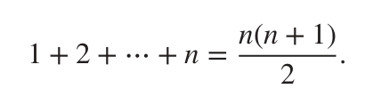
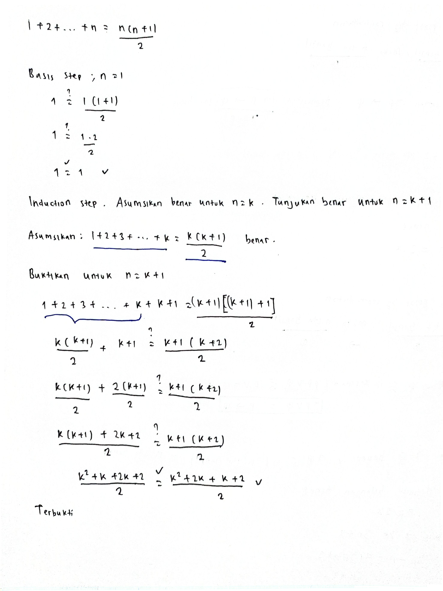
Pembuktian dengan Induksi:
Misalkan \(P(n)\) adalah pernyataan \(1 + 2 + \dots + n = \frac{n(n+1)}{2}\).
1. Basis Step:
- Untuk \(n = 1\):
Sisi Kiri (LHS) = 1
Sisi Kanan (RHS) = \(\frac{1(1+1)}{2} = \frac{2}{2} = 1\) - Karena LHS = RHS, maka \(P(1)\) bernilai Benar.
2. Inductive Step:
- Asumsikan \(P(k)\) benar untuk suatu bilangan bulat \(k \ge 1\). Yaitu: \[1 + 2 + 3 + \dots + k = \frac{k(k+1)}{2} \quad \text{(Hipotesis Induksi)}\]
- Kita harus membuktikan bahwa \(P(k+1)\) juga benar, yaitu: \[1 + 2 + 3 + \dots + k + (k+1) = \frac{(k+1)((k+1)+1)}{2} = \frac{(k+1)(k+2)}{2}\]
- Mari olah sisi kiri dari \(P(k+1)\): \[\underbrace{1 + 2 + 3 + \dots + k}_{\text{substitusi hipotesis}} + (k+1)\] \[= \frac{k(k+1)}{2} + (k+1)\]
- Samakan penyebut untuk menjumlahkan kedua suku: \[= \frac{k(k+1)}{2} + \frac{2(k+1)}{2}\] \[= \frac{k(k+1) + 2(k+1)}{2}\]
- Faktorkan keluar bentuk \((k+1)\): \[= \frac{(k+1)(k+2)}{2}\]
- Hasil akhir ini sama persis dengan sisi kanan dari \(P(k+1)\).
Karena Basis Step dan Inductive Step telah terbukti, maka berdasarkan prinsip induksi matematika, rumus tersebut benar untuk semua \(n \ge 1\). \(\blacksquare\)
Buktikan menggunakan induksi matematika bahwa untuk semua bilangan bulat non-negatif \(n \ge 0\): \[1 + 2 + 2^2 + \dots + 2^n = 2^{n+1} - 1\]
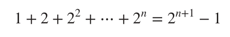
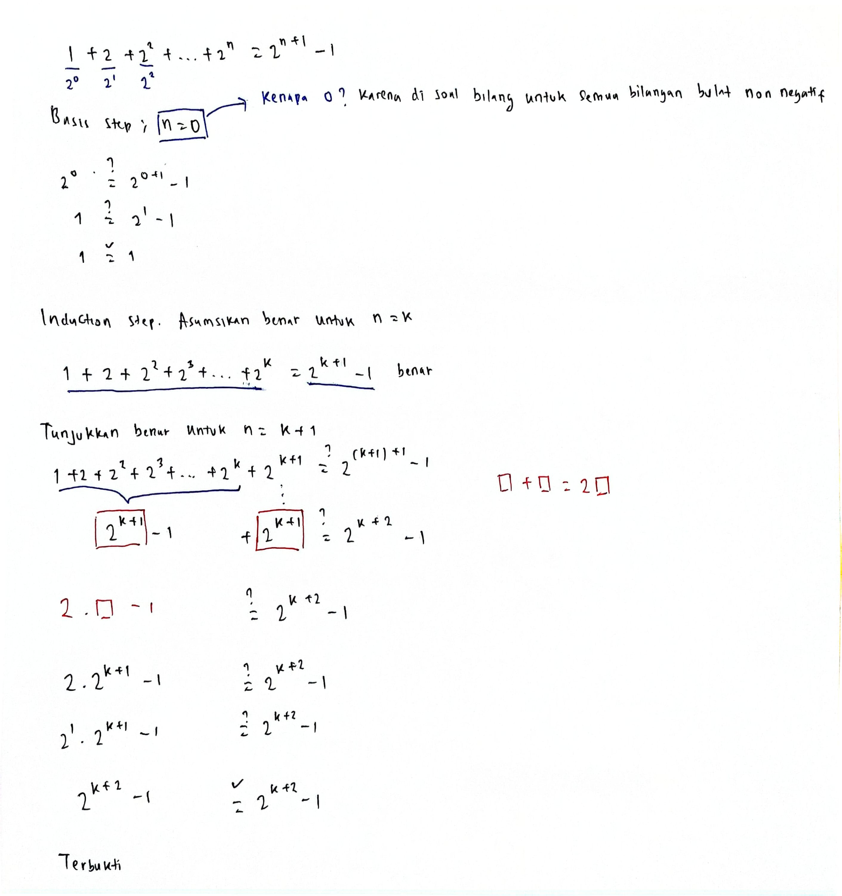
Pembuktian dengan Induksi:
Misalkan \(P(n)\) adalah pernyataan \(1 + 2 + 2^2 + \dots + 2^n = 2^{n+1} - 1\).
1. Basis Step:
- Karena domainnya adalah bilangan non-negatif (\(n \ge 0\)), maka kasus terkecil dimulai dari \(n = 0\).
LHS = \(2^0 = 1\)
RHS = \(2^{0+1} - 1 = 2^1 - 1 = 1\) - Karena LHS = RHS, maka \(P(0)\) bernilai Benar.
2. Inductive Step:
- Asumsikan \(P(k)\) benar untuk suatu bilangan bulat \(k \ge 0\), yaitu: \[1 + 2 + 2^2 + \dots + 2^k = 2^{k+1} - 1 \quad \text{(Hipotesis Induksi)}\]
- Kita harus membuktikan bahwa \(P(k+1)\) benar, yaitu: \[1 + 2 + 2^2 + \dots + 2^k + 2^{k+1} = 2^{k+2} - 1\]
- Tulis sisi kiri dari \(P(k+1)\) dan gunakan hipotesis induksi: \[\left( 1 + 2 + 2^2 + \dots + 2^k \right) + 2^{k+1}\] \[= \left( 2^{k+1} - 1 \right) + 2^{k+1}\]
- Kelompokkan suku berpangkat sama: \[= 2^{k+1} + 2^{k+1} - 1\] \[= 2 \cdot (2^{k+1}) - 1\] \[= 2^{k+2} - 1\]
- Hasil ini sama dengan sisi kanan dari \(P(k+1)\).
Dengan demikian, rumus tersebut terbukti benar untuk semua bilangan bulat non-negatif \(n \ge 0\). \(\blacksquare\)
4b. Deret Geometri
Buktikan dengan induksi matematika bahwa rumus penjumlahan deret geometri untuk \(r \neq 1\) adalah: \[\sum_{j=0}^{n} ar^j = a + ar + ar^2 + \dots + ar^n = \frac{ar^{n+1}-a}{r-1}\]
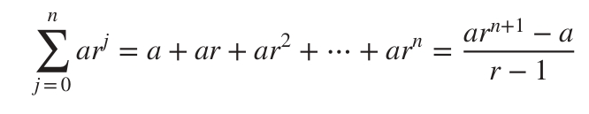
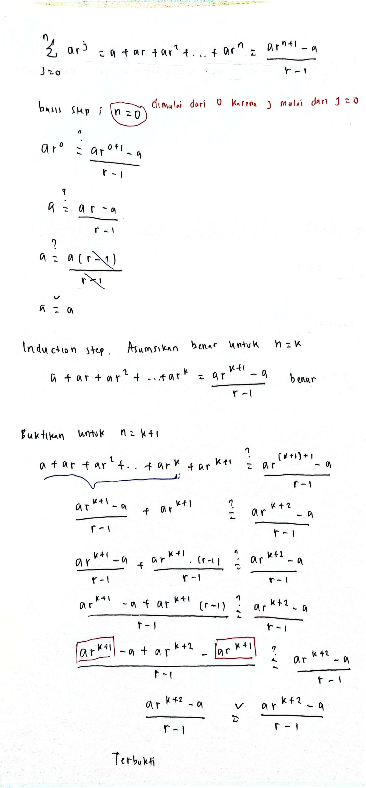
Pembuktian dengan Induksi:
Misalkan \(P(n)\) adalah rumus \(\sum_{j=0}^{n} ar^j = \frac{ar^{n+1}-a}{r-1}\).
1. Basis Step:
- Untuk \(n = 0\):
LHS = \(ar^0 = a\)
RHS = \(\frac{ar^{0+1}-a}{r-1} = \frac{ar-a}{r-1} = \frac{a(r-1)}{r-1} = a\) - LHS = RHS, maka \(P(0)\) bernilai Benar.
2. Inductive Step:
- Asumsikan \(P(k)\) benar untuk \(k \ge 0\), yaitu: \[\sum_{j=0}^{k} ar^j = \frac{ar^{k+1}-a}{r-1} \quad \text{(Hipotesis Induksi)}\]
- Kita harus membuktikan \(P(k+1)\) benar, yaitu: \[\sum_{j=0}^{k+1} ar^j = \frac{ar^{k+2}-a}{r-1}\]
- Olah sisi kiri \(P(k+1)\): \[\sum_{j=0}^{k+1} ar^j = \left( \sum_{j=0}^{k} ar^j \right) + ar^{k+1}\]
- Gunakan hipotesis induksi untuk mengganti bagian penjumlahan dalam kurung: \[= \frac{ar^{k+1}-a}{r-1} + ar^{k+1}\]
- Samakan penyebut dengan mengalikan suku kedua dengan \(\frac{r-1}{r-1}\): \[= \frac{ar^{k+1}-a + ar^{k+1}(r-1)}{r-1}\] \[= \frac{ar^{k+1}-a + ar^{k+2}-ar^{k+1}}{r-1}\]
- Hilangkan suku \(ar^{k+1}\) dan \(-ar^{k+1}\): \[= \frac{ar^{k+2}-a}{r-1}\]
LHS = RHS, langkah induksi terbukti! Rumus terbukti benar untuk semua bilangan bulat non-negatif \(n \ge 0\). \(\blacksquare\)
4c. Pertidaksamaan
Buktikan menggunakan induksi matematika bahwa pertidaksamaan berikut bernilai benar untuk semua bilangan bulat positif \(n \ge 1\): \[n < 2^n\]
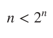
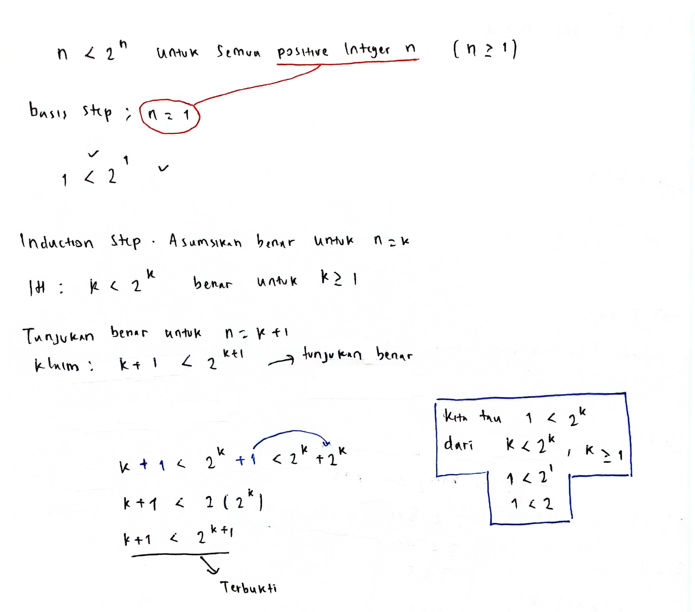
Pembuktian dengan Induksi:
Misalkan \(P(n)\) menyatakan pertidaksamaan \(n < 2^n\).
1. Basis Step:
- Untuk \(n = 1\):
LHS = 1
RHS = \(2^1 = 2\) - Karena \(1 < 2\), maka \(P(1)\) bernilai Benar.
2. Inductive Step:
- Asumsikan \(P(k)\) benar untuk suatu bilangan bulat positif \(k \ge 1\), yaitu: \[k < 2^k \quad \text{(Hipotesis Induksi)}\]
- Kita harus membuktikan \(P(k+1)\) benar, yaitu: \[k+1 < 2^{k+1}\]
- Mulai dari hipotesis induksi: \[k < 2^k\] Tambahkan angka 1 di kedua sisi pertidaksamaan: \[k+1 < 2^k + 1\]
- Kita ketahui bahwa untuk semua bilangan bulat \(k \ge 1\), nilai \(1 \le 2^k\) adalah benar. Maka: \[2^k + 1 \le 2^k + 2^k\]
- Jumlahkan kedua suku eksponensial di sisi kanan: \[2^k + 2^k = 2 \cdot 2^k = 2^{k+1}\]
- Berdasarkan sifat transitif pertidaksamaan (\(A < B\) dan \(B \le C \implies A < C\)): \[k+1 < 2^k + 1 \le 2^{k+1}\] \[k+1 < 2^{k+1}\]
Langkah induktif berhasil dibuktikan. Maka pertidaksamaan \(n < 2^n\) terbukti benar untuk semua \(n \ge 1\). \(\blacksquare\)
Buktikan secara induksi bahwa pertidaksamaan berikut bernilai benar untuk semua bilangan bulat positif \(n \ge 4\): \[2^n < n!\]
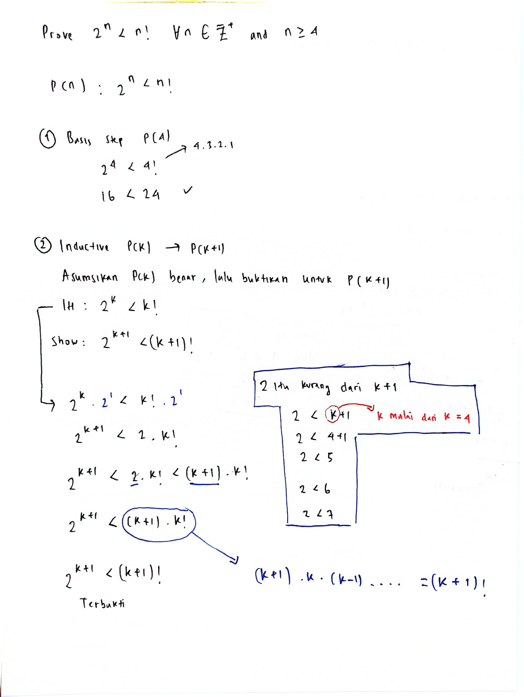
Pembuktian dengan Induksi:
Misalkan \(P(n)\) menyatakan pertidaksamaan \(2^n < n!\).
1. Basis Step:
- Karena pertidaksamaan disyaratkan untuk \(n \ge 4\), kita menguji kasus terkecil \(n = 4\):
LHS = \(2^4 = 16\)
RHS = \(4! = 4 \times 3 \times 2 \times 1 = 24\) - Karena \(16 < 24\), maka \(P(4)\) bernilai Benar.
2. Inductive Step:
- Asumsikan \(P(k)\) benar untuk bilangan bulat \(k \ge 4\), yaitu: \[2^k < k! \quad \text{(Hipotesis Induksi)}\]
- Kita ingin membuktikan \(P(k+1)\) benar, yaitu: \[2^{k+1} < (k+1)!\]
- Kalikan hipotesis induksi dengan angka 2 di kedua sisi: \[2 \cdot 2^k < 2 \cdot k!\] \[2^{k+1} < 2 \cdot k!\]
- Karena \(k \ge 4\), maka angka 2 pastilah lebih kecil dari \(k+1\) (\(2 < k+1\)). Sehingga: \[2 \cdot k! < (k+1) \cdot k!\]
- Berdasarkan definisi faktorial, \((k+1) \cdot k! = (k+1)!\). Maka kita peroleh: \[2^{k+1} < 2 \cdot k! < (k+1)!\] \[2^{k+1} < (k+1)!\]
Langkah induksi terbukti. Pertidaksamaan benar untuk semua bilangan bulat positif \(n \ge 4\). \(\blacksquare\)
Bilangan Harmonik \(H_j\) didefinisikan sebagai: \[H_j = 1 + \frac{1}{2} + \frac{1}{3} + \dots + \frac{1}{j}\] Buktikan menggunakan induksi matematika bahwa untuk semua bilangan bulat positif \(n \ge 1\): \[H_{2^n} \ge 1 + \frac{n}{2}\]
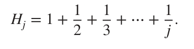
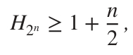
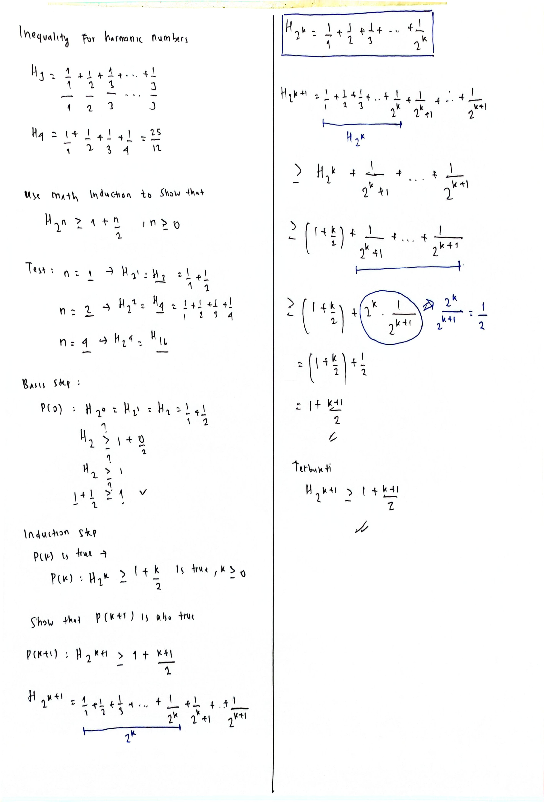
Pembuktian dengan Induksi:
Misalkan \(P(n)\) adalah pertidaksamaan \(H_{2^n} \ge 1 + \frac{n}{2}\).
1. Basis Step:
- Untuk \(n = 1\):
LHS = \(H_{2^1} = H_2 = 1 + \frac{1}{2}\)
RHS = \(1 + \frac{1}{2}\) - Karena \(1 + \frac{1}{2} \ge 1 + \frac{1}{2}\), maka \(P(1)\) bernilai Benar.
2. Inductive Step:
- Asumsikan \(P(k)\) benar untuk bilangan bulat \(k \ge 1\), yaitu: \[H_{2^k} \ge 1 + \frac{k}{2} \quad \text{(Hipotesis Induksi)}\]
- Kita harus membuktikan bahwa \(P(k+1)\) benar, yaitu: \[H_{2^{k+1}} \ge 1 + \frac{k+1}{2}\]
- Mari kita tulis ekspresi untuk \(H_{2^{k+1}}\): \[H_{2^{k+1}} = 1 + \frac{1}{2} + \frac{1}{3} + \dots + \frac{1}{2^k} + \frac{1}{2^k + 1} + \dots + \frac{1}{2^{k+1}}\] \[H_{2^{k+1}} = H_{2^k} + \sum_{i=2^k+1}^{2^{k+1}} \frac{1}{i}\]
- Tinjau deret penjumlahan \(\sum_{i=2^k+1}^{2^{k+1}} \frac{1}{i}\). Deret ini memiliki: \[2^{k+1} - 2^k = 2^k \cdot 2 - 2^k = 2^k \text{ buah suku}\] Suku terkecil dari deret ini adalah suku terakhir, yaitu \(\frac{1}{2^{k+1}}\).
- Jika kita ganti setiap suku di deret tersebut dengan suku terkecilnya, nilainya akan menjadi lebih kecil atau sama: \[\sum_{i=2^k+1}^{2^{k+1}} \frac{1}{i} \ge \underbrace{\frac{1}{2^{k+1}} + \frac{1}{2^{k+1}} + \dots + \frac{1}{2^{k+1}}}_{2^k \text{ suku}}\] \[\sum_{i=2^k+1}^{2^{k+1}} \frac{1}{i} \ge 2^k \cdot \frac{1}{2^{k+1}} = 2^k \cdot \frac{1}{2 \cdot 2^k} = \frac{1}{2}\]
- Sekarang substitusikan taksiran bawah ini beserta hipotesis induksi ke persamaan \(H_{2^{k+1}}\): \[H_{2^{k+1}} \ge H_{2^k} + \frac{1}{2}\] \[H_{2^{k+1}} \ge \left( 1 + \frac{k}{2} \right) + \frac{1}{2}\] \[H_{2^{k+1}} \ge 1 + \frac{k+1}{2}\]
Langkah induksi berhasil dibuktikan, sehingga pertidaksamaan benar untuk semua \(n \ge 1\). \(\blacksquare\)
4d. Habis Membagi
Buktikan secara induksi bahwa untuk setiap bilangan bulat positif \(n \ge 1\), bentuk aljabar berikut habis dibagi oleh 3: \[n^3 - n\]
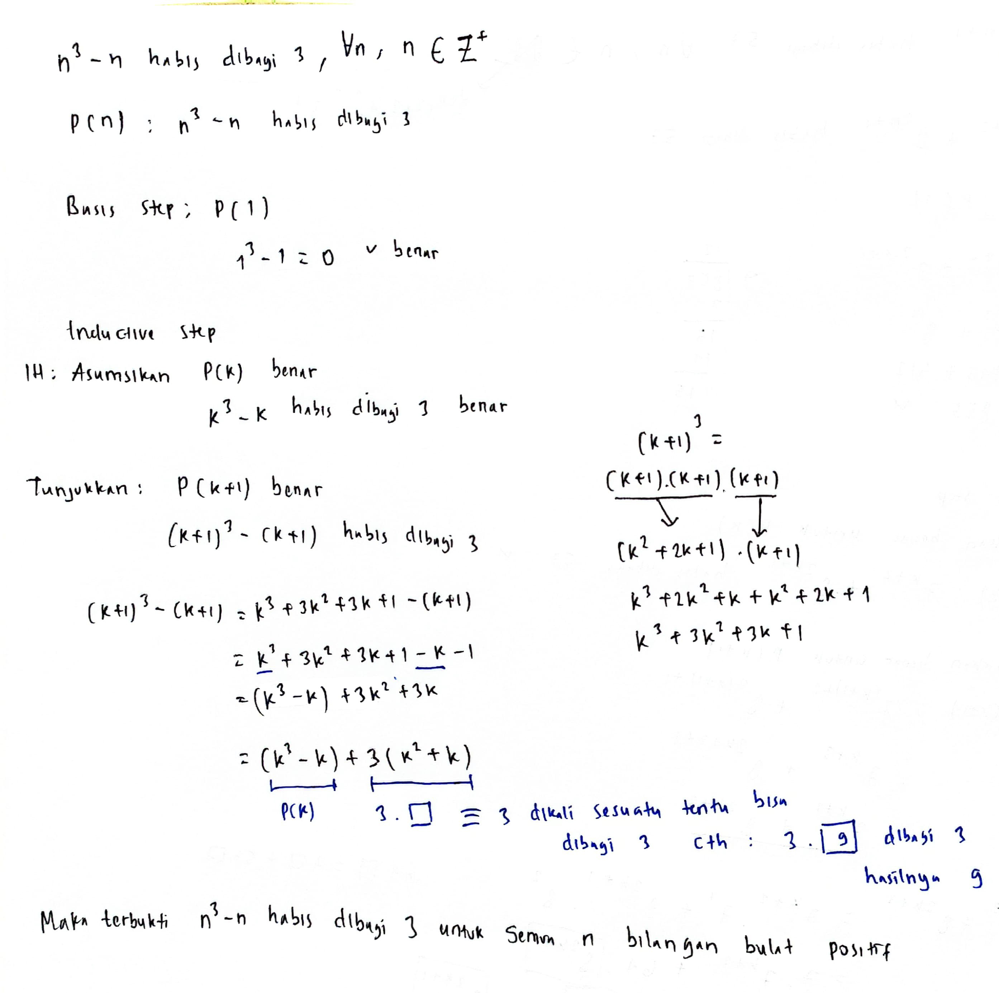
Pembuktian dengan Induksi:
Misalkan \(P(n)\) adalah pernyataan "\(n^3 - n\) habis dibagi 3".
1. Basis Step:
- Untuk \(n = 1\): \[1^3 - 1 = 0\] Karena 0 habis dibagi oleh 3 (\(0 = 3 \times 0\)), maka \(P(1)\) bernilai Benar.
2. Inductive Step:
- Asumsikan \(P(k)\) benar untuk bilangan bulat \(k \ge 1\), artinya \(k^3 - k\) habis dibagi 3.
Dapat ditulis: \[k^3 - k = 3m \quad \text{untuk suatu } m \in \mathbb{Z} \quad \text{(Hipotesis Induksi)}\] - Kita harus membuktikan bahwa \(P(k+1)\) benar, yaitu \((k+1)^3 - (k+1)\) juga habis dibagi 3.
- Mari ekspansi dan olah bentuk \((k+1)^3 - (k+1)\): \[(k+1)^3 - (k+1) = (k^3 + 3k^2 + 3k + 1) - (k + 1)\] Kelompokkan suku-suku agar memuat hipotesis induksi: \[= (k^3 - k) + 3k^2 + 3k + 1 - 1\] \[= (k^3 - k) + 3(k^2 + k)\]
- Substitusikan \(k^3 - k = 3m\) ke dalam persamaan: \[= 3m + 3(k^2 + k)\] Faktorkan angka 3: \[= 3(m + k^2 + k)\]
- Karena \(m, k \in \mathbb{Z}\), maka nilai \((m + k^2 + k)\) juga merupakan bilangan bulat.
- Karena seluruh ekspresi merupakan perkalian angka 3 dengan bilangan bulat lainnya, maka terbukti bahwa \((k+1)^3 - (k+1)\) habis dibagi 3.
Dengan demikian, berdasarkan prinsip induksi, \(n^3 - n\) habis dibagi 3 untuk semua \(n \ge 1\). \(\blacksquare\)
Buktikan menggunakan induksi matematika bahwa untuk setiap bilangan bulat non-negatif \(n \ge 0\), ekspresi berikut habis dibagi 57: \[7^{n+2} + 8^{2n+1}\]
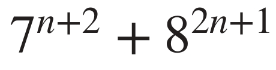
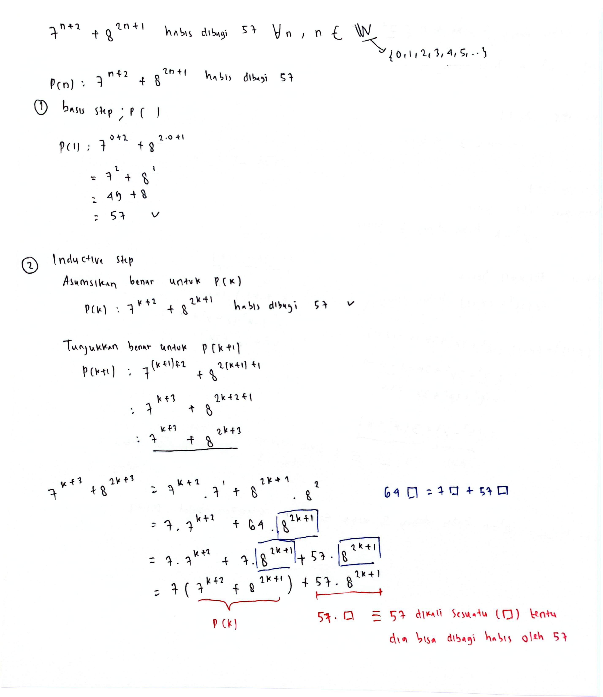
Pembuktian dengan Induksi:
Misalkan \(P(n)\) menyatakan "\(7^{n+2} + 8^{2n+1}\) habis dibagi 57".
1. Basis Step:
- Untuk \(n = 0\): \[7^{0+2} + 8^{0+1} = 7^2 + 8^1 = 49 + 8 = 57\] Karena 57 habis dibagi 57, maka \(P(0)\) bernilai Benar.
2. Inductive Step:
- Asumsikan \(P(k)\) benar untuk \(k \ge 0\), yaitu \(7^{k+2} + 8^{2k+1}\) habis dibagi 57.
Dapat ditulis: \[7^{k+2} + 8^{2k+1} = 57m \quad \text{untuk suatu } m \in \mathbb{Z} \quad \text{(Hipotesis Induksi)}\] - Kita harus membuktikan \(P(k+1)\) benar, yaitu \(7^{(k+1)+2} + 8^{2(k+1)+1} = 7^{k+3} + 8^{2k+3}\) habis dibagi 57.
- Mari olah ekspresi untuk \(P(k+1)\): \[7^{k+3} + 8^{2k+3} = 7^1 \cdot 7^{k+2} + 8^2 \cdot 8^{2k+1}\] \[= 7 \cdot 7^{k+2} + 64 \cdot 8^{2k+1}\]
- Kita pecah angka 64 menjadi penjumlahan yang mengandung koefisien 7 agar dapat dikelompokkan dengan suku pertama: \[= 7 \cdot 7^{k+2} + (7 + 57) \cdot 8^{2k+1}\] \[= 7 \cdot 7^{k+2} + 7 \cdot 8^{2k+1} + 57 \cdot 8^{2k+1}\] \[= 7(7^{k+2} + 8^{2k+1}) + 57 \cdot 8^{2k+1}\]
- Substitusikan hipotesis induksi (\(7^{k+2} + 8^{2k+1} = 57m\)): \[= 7(57m) + 57 \cdot 8^{2k+1}\] \[= 57(7m + 8^{2k+1})\]
- Karena \(m, k \in \mathbb{Z}\) dan \(k \ge 0\), maka \((7m + 8^{2k+1})\) adalah bilangan bulat.
- Karena ekspresi akhir berbentuk \(57 \times \text{bilangan bulat}\), maka terbukti habis dibagi 57.
Langkah induksi berhasil dibuktikan, sehingga ekspresi habis dibagi 57 untuk semua \(n \ge 0\). \(\blacksquare\)
5. Soal Latihan Tambahan (10 Soal Induksi)
Berikut adalah kumpulan 10 soal latihan induksi matematika beserta langkah dan solusi detail berdasarkan visualisasi grafis catatan perkuliahan.
Buktikan dengan induksi matematika rumus penjumlahan bilangan bulat positif pertama: \[1 + 2 + 3 + \dots + n = \frac{1}{2} n(n + 1)\]
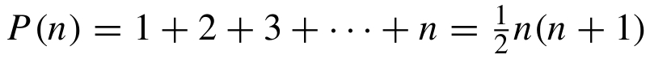
Langkah Pembuktian:
- Basis Step (n = 1): LHS = 1, RHS = \(\frac{1}{2}(1)(2) = 1\). Benar.
- Inductive Step: Asumsikan benar untuk \(n=k\): \(1+2+\dots+k = \frac{k(k+1)}{2}\).
Untuk \(n=k+1\): \[1+2+\dots+k+(k+1) = \frac{k(k+1)}{2} + (k+1) = (k+1)\left(\frac{k}{2} + 1\right) = \frac{(k+1)(k+2)}{2}\] Sesuai dengan RHS kasus \(k+1\). Terbukti.
Buktikan dengan induksi matematika deret pangkat 2 berikut untuk \(n \ge 0\): \[1 + 2 + 2^2 + 2^3 + \dots + 2^n = 2^{n+1} - 1\]
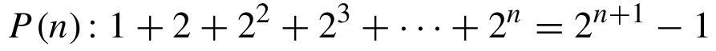
Langkah Pembuktian:
- Basis Step (n = 0): LHS = \(2^0 = 1\), RHS = \(2^1 - 1 = 1\). Benar.
- Inductive Step: Asumsikan benar untuk \(n=k\): \(\sum_{i=0}^k 2^i = 2^{k+1} - 1\).
Untuk \(n=k+1\): \[\sum_{i=0}^{k+1} 2^i = (2^{k+1} - 1) + 2^{k+1} = 2 \cdot 2^{k+1} - 1 = 2^{k+2} - 1\] Sesuai dengan RHS kasus \(k+1\). Terbukti.
Buktikan dengan induksi matematika rumus penjumlahan bilangan genap positif pertama: \[2 + 4 + 6 + \dots + 2n = n(n + 1)\]
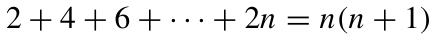
Langkah Pembuktian:
- Basis Step (n = 1): LHS = \(2(1) = 2\), RHS = \(1(1+1) = 2\). Benar.
- Inductive Step: Asumsikan benar untuk \(n=k\): \(2 + 4 + \dots + 2k = k(k+1)\).
Untuk \(n=k+1\): \[2+4+\dots+2k + 2(k+1) = k(k+1) + 2(k+1) = (k+1)(k+2)\] Sesuai dengan RHS kasus \(k+1\). Terbukti.
Buktikan rumus deret aritmatika dengan beda 3 berikut: \[1 + 4 + 7 + \dots + (3n - 2) = \frac{n(3n - 1)}{2}\]
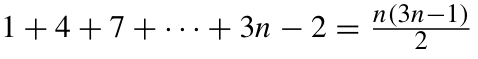
Langkah Pembuktian:
- Basis Step (n = 1): LHS = \(3(1)-2 = 1\), RHS = \(\frac{1(3(1)-1)}{2} = \frac{2}{2} = 1\). Benar.
- Inductive Step: Asumsikan benar untuk \(n=k\): \(1+4+\dots+(3k-2) = \frac{k(3k-1)}{2}\).
Untuk \(n=k+1\) (sukunya adalah \(3(k+1)-2 = 3k+1\)): \[\text{LHS} = \frac{k(3k-1)}{2} + (3k+1) = \frac{3k^2 - k + 6k + 2}{2} = \frac{3k^2 + 5k + 2}{2}\] \[\text{Faktorkan pembilang: } 3k^2 + 5k + 2 = (k+1)(3k+2)\] \[\text{LHS} = \frac{(k+1)(3(k+1)-1)}{2}\] Sesuai dengan RHS kasus \(k+1\). Terbukti.
Buktikan rumus penjumlahan kuadrat bilangan bulat positif pertama: \[1^2 + 2^2 + 3^2 + \dots + n^2 = \frac{n(n + 1)(2n + 1)}{6}\]
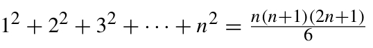
Langkah Pembuktian:
- Basis Step (n = 1): LHS = \(1^2 = 1\), RHS = \(\frac{1(2)(3)}{6} = 1\). Benar.
- Inductive Step: Asumsikan benar untuk \(n=k\): \(\sum_{i=1}^k i^2 = \frac{k(k+1)(2k+1)}{6}\).
Untuk \(n=k+1\): \[\text{LHS} = \frac{k(k+1)(2k+1)}{6} + (k+1)^2 = (k+1)\left[\frac{k(2k+1) + 6(k+1)}{6}\right]\] \[= (k+1)\left[\frac{2k^2 + 7k + 6}{6}\right] = \frac{(k+1)(k+2)(2k+3)}{6}\] Sesuai dengan RHS kasus \(k+1\) karena \((2(k+1)+1) = 2k+3\). Terbukti.
Buktikan rumus deret teleskopik berikut: \[\frac{1}{1 \cdot 3} + \frac{1}{3 \cdot 5} + \frac{1}{5 \cdot 7} + \dots + \frac{1}{(2n - 1)(2n + 1)} = \frac{n}{2n + 1}\]
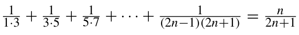
Langkah Pembuktian:
- Basis Step (n = 1): LHS = \(\frac{1}{1 \cdot 3} = \frac{1}{3}\), RHS = \(\frac{1}{2(1)+1} = \frac{1}{3}\). Benar.
- Inductive Step: Asumsikan benar untuk \(n=k\): \(\text{LHS}_k = \frac{k}{2k+1}\).
Untuk \(n=k+1\) (suku tambahannya adalah \(\frac{1}{(2k+1)(2k+3)}\)): \[\text{LHS} = \frac{k}{2k+1} + \frac{1}{(2k+1)(2k+3)} = \frac{k(2k+3) + 1}{(2k+1)(2k+3)}\] \[= \frac{2k^2 + 3k + 1}{(2k+1)(2k+3)} = \frac{(2k+1)(k+1)}{(2k+1)(2k+3)} = \frac{k+1}{2k+3}\] Sesuai dengan RHS kasus \(k+1\) karena \((2(k+1)+1) = 2k+3\). Terbukti.
Buktikan rumus deret teleskopik berikut: \[\frac{1}{1 \cdot 5} + \frac{1}{5 \cdot 9} + \frac{1}{9 \cdot 13} + \dots + \frac{1}{(4n - 3)(4n + 1)} = \frac{n}{4n + 1}\]
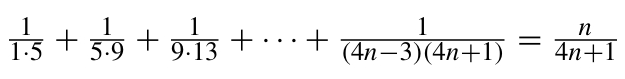
Langkah Pembuktian:
- Basis Step (n = 1): LHS = \(\frac{1}{1 \cdot 5} = \frac{1}{5}\), RHS = \(\frac{1}{4(1)+1} = \frac{1}{5}\). Benar.
- Inductive Step: Asumsikan benar untuk \(n=k\): \(\text{LHS}_k = \frac{k}{4k+1}\).
Untuk \(n=k+1\) (suku tambahannya adalah \(\frac{1}{(4k+1)(4k+5)}\)): \[\text{LHS} = \frac{k}{4k+1} + \frac{1}{(4k+1)(4k+5)} = \frac{k(4k+5) + 1}{(4k+1)(4k+5)}\] \[= \frac{4k^2 + 5k + 1}{(4k+1)(4k+5)} = \frac{(4k+1)(k+1)}{(4k+1)(4k+5)} = \frac{k+1}{4k+5}\] Sesuai dengan RHS kasus \(k+1\) karena \((4(k+1)+1) = 4k+5\). Terbukti.
Buktikan menggunakan induksi matematika bahwa untuk semua bilangan bulat positif \(n \in \mathbb{N}\): \[7^n - 2^n \text{ habis dibagi oleh } 5\]
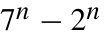
Langkah Pembuktian:
- Basis Step (n = 1): \(7^1 - 2^1 = 5\), yang habis dibagi 5. Benar.
- Inductive Step: Asumsikan benar untuk \(n=k\): \(7^k - 2^k = 5m\) (\(m \in \mathbb{Z}\)).
Untuk \(n=k+1\): \[7^{k+1} - 2^{k+1} = 7 \cdot 7^k - 2 \cdot 2^k = 7 \cdot 7^k - 2 \cdot 7^k + 2 \cdot 7^k - 2 \cdot 2^k\] \[= 5 \cdot 7^k + 2(7^k - 2^k)\] Substitusikan hipotesis induksi: \[= 5 \cdot 7^k + 2(5m) = 5(7^k + 2m)\] Karena \((7^k + 2m)\) bulat, maka terbukti habis dibagi 5.
Buktikan menggunakan induksi matematika bahwa untuk semua bilangan bulat positif \(n \in \mathbb{N}\): \[n^3 - 4n + 6 \text{ habis dibagi oleh } 3\]
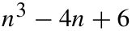
Langkah Pembuktian:
- Basis Step (n = 1): \(1^3 - 4(1) + 6 = 3\), yang habis dibagi 3. Benar.
- Inductive Step: Asumsikan benar untuk \(n=k\): \(k^3 - 4k + 6 = 3m\).
Untuk \(n=k+1\): \[(k+1)^3 - 4(k+1) + 6 = (k^3 + 3k^2 + 3k + 1) - 4k - 4 + 6\] \[= (k^3 - 4k + 6) + 3k^2 + 3k - 3\] Substitusikan hipotesis induksi: \[= 3m + 3(k^2 + k - 1) = 3(m + k^2 + k - 1)\] Terbukti habis dibagi 3 karena koefisien terluar adalah 3.
Gunakan identitas \(1 + 2 + 3 + \dots + n = \frac{n(n + 1)}{2}\) untuk membuktikan bahwa: \[1^3 + 2^3 + 3^3 + \dots + n^3 = (1 + 2 + 3 + \dots + n)^2 = \left[ \frac{n(n+1)}{2} \right]^2\]
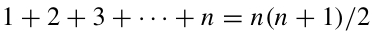
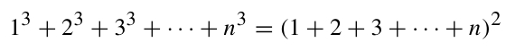
Langkah Pembuktian:
- Basis Step (n = 1): LHS = \(1^3 = 1\), RHS = \(\left[\frac{1(2)}{2}\right]^2 = 1\). Benar.
- Inductive Step: Asumsikan benar untuk \(n=k\): \(\sum_{i=1}^k i^3 = \left[\frac{k(k+1)}{2}\right]^2\).
Untuk \(n=k+1\): \[\text{LHS} = \left[\frac{k(k+1)}{2}\right]^2 + (k+1)^3 = \frac{k^2(k+1)^2}{4} + (k+1)^3\] Faktorkan \((k+1)^2\): \[= (k+1)^2 \left[ \frac{k^2}{4} + (k+1) \right] = (k+1)^2 \left[ \frac{k^2 + 4k + 4}{4} \right]\] \[= (k+1)^2 \frac{(k+2)^2}{4} = \left[ \frac{(k+1)(k+2)}{2} \right]^2\] Sesuai dengan RHS kasus \(k+1\). Terbukti.